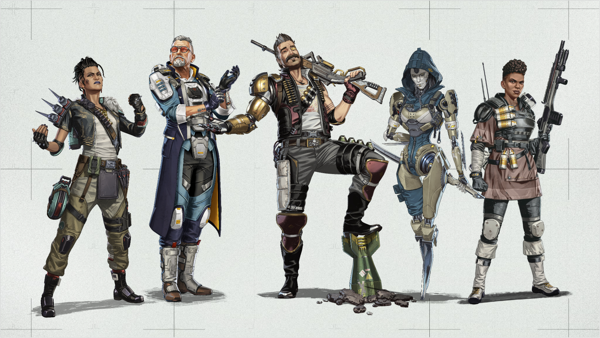
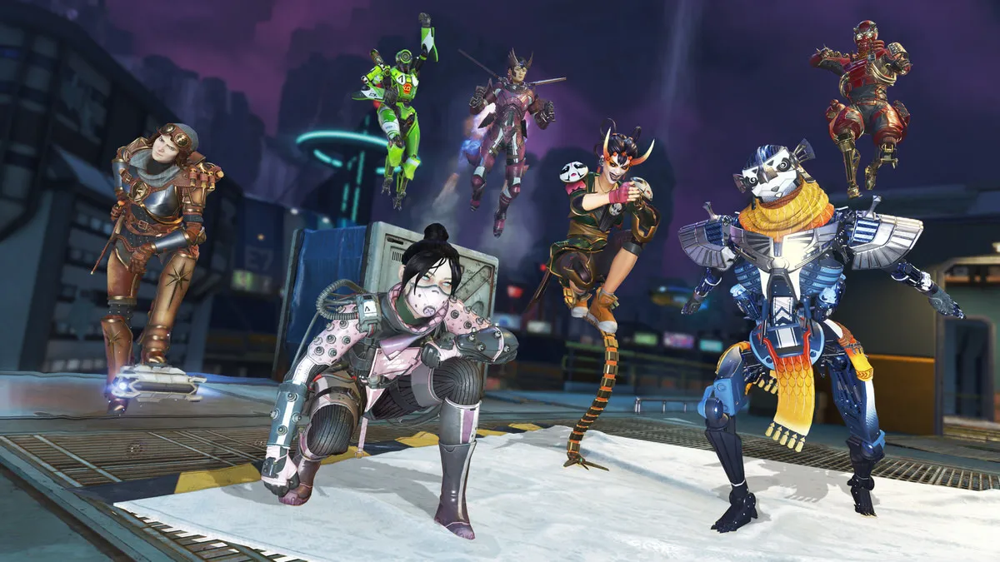
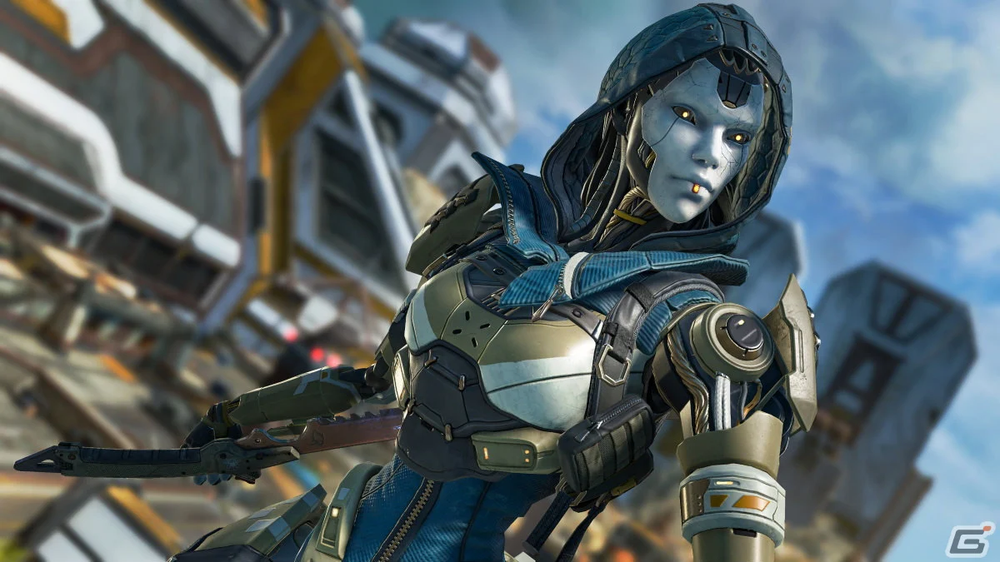
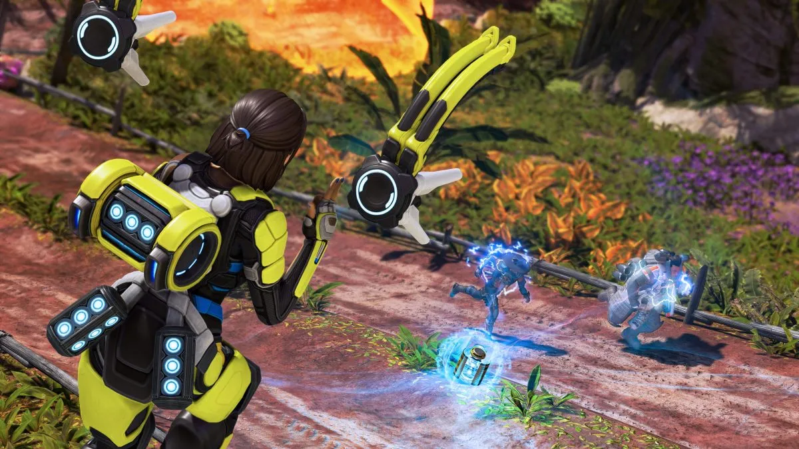

⬇ 5/6(火)に公開されたパッチノートの情報をまとめました！ ⬇
◾クラス調整内容
【アサルト】

- ◾︎バトルサージ
- ・シールドが割れた際のスキャン 削除
- ・体力バーの表示が4秒から3秒に
【スカーミッシャー】

◾レジェンド調整内容
5月7日から始まるシーズン25「PRODIGY」で
神童と呼ばれる若き弓使い
スパロー
が登場!!!
↓ 詳しくはこちら ↓
【アッシュ】

- ・捕食者の追跡：デスボックスのミニマップの場所とシグナル送信を削除"
- 以前のホットフィックス
- ・アルティメットの最大移動時間を1.4秒から2.5秒に増加
- ・アルティメットの最小移動時間を0.3秒から0.5秒に増加
【コンジット】

- 以前のホットフィックス
- ・1ティックあたりの戦術アビリティの体力自動回復を3から4に増加
【ミラージュ】
- 以前のホットフィックス
- ・アルティメット中に作成されるデコイの数を5から6に増加
【パスファインダー】
- ◾️戦術アビリティ
- ・クールダウンを30秒から、移動距離に応じて10秒から30秒の範囲で変動するように変更
- ◾️ULT
- ・ダメージ軽減率を25%から50%に引き上げ
（これが標準搭載）
- ◾️アップグレード: レベル3
- ・グラップルゴット： 戦術+1チャージ
- ・フィーリングジッピー： ULT+1チャージ
【シア】
- 以前のホットフィックス
- ・戦術アビリティがターゲットに命中するまでの時間を1.4秒から0.8秒に短縮
- ・戦術アビリティが終了するまでの時間を1.0秒から0.9秒に短縮
TOPへ